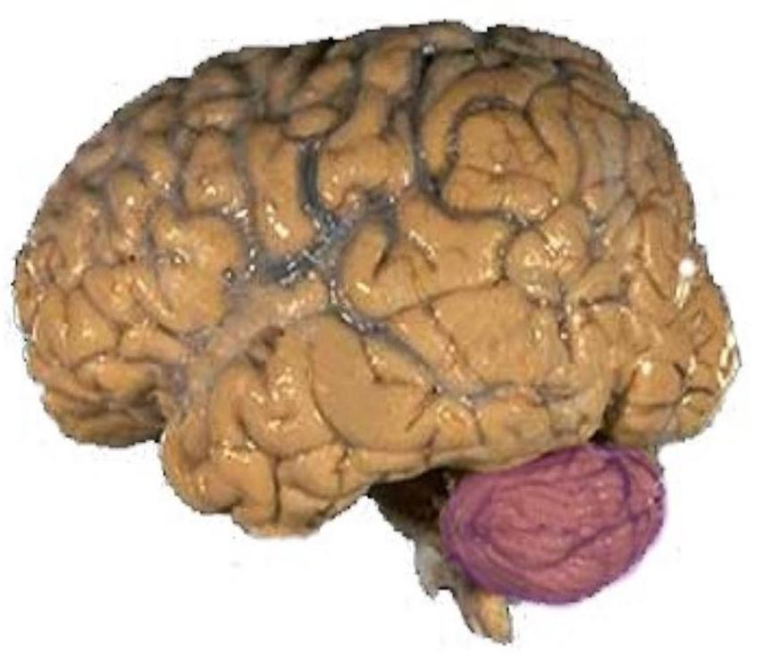
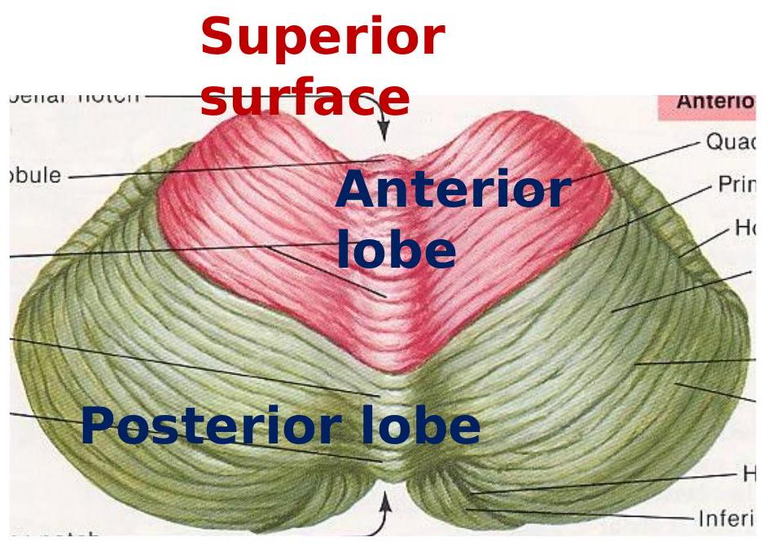
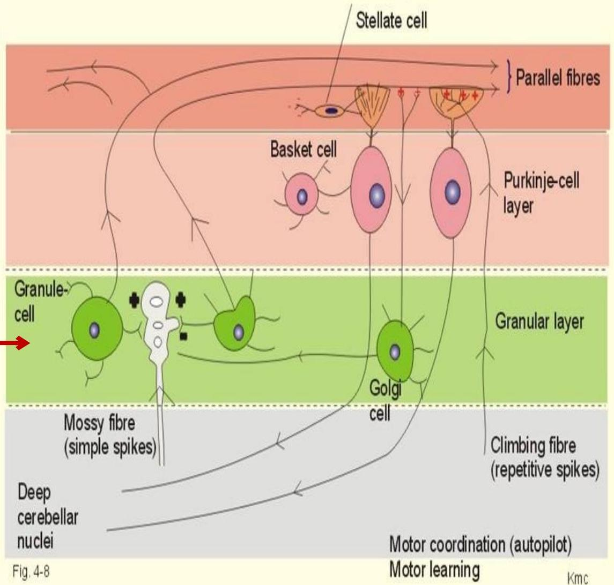
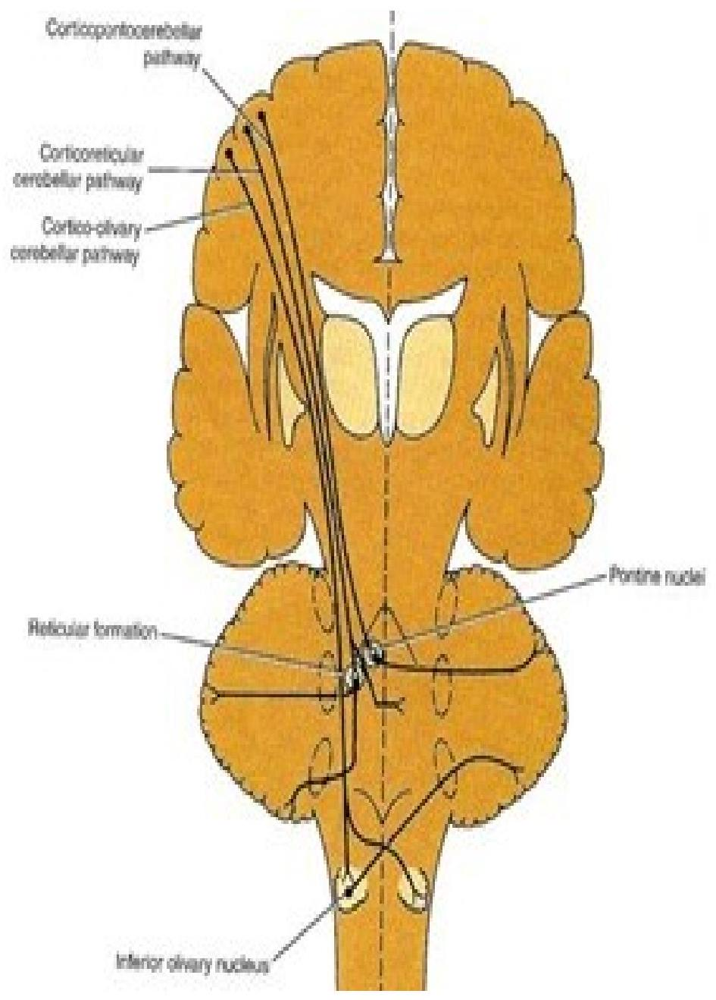
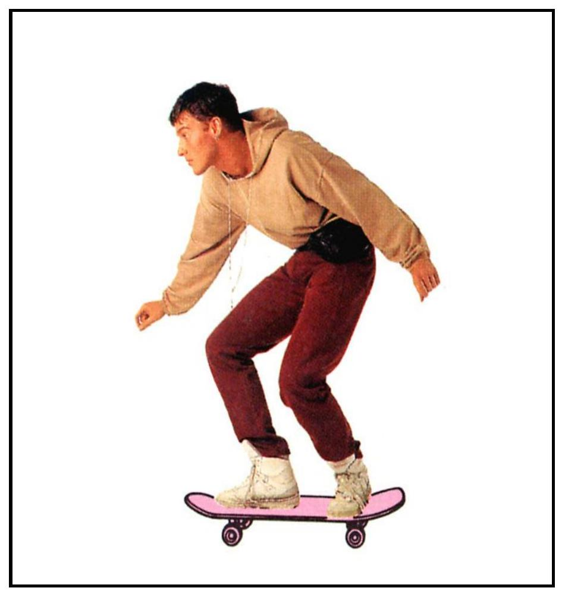

The Cerebellum
Key messages
- Surface and internal anatomy of the cerebellum
- Cerebellar functions
- Cerebellar connections
- Applied anatomy
GROSS ANATOMY OF CEREBELLUM
Location:
The term cerebellum is from "latin meaning" the little brain. It is a part of the hindbrain situated in the posterior cranial fossa.
covered by tentorium cerebelli and is connected to brain stem by three cerebellar peduncles.
contd.
- Consists of two laterally, large hemisphere which are united by midline vermis.
- Cerebellar surface is divided by numerous curve transverse fissures giving it a laminated appearance
- One conspicious fissure "horizontal fissure"extends around dorsolateral border of each hemisphere from middle cerebellar peduncle to vallecula, seperating superior and inferior surface
External surface of cerebellum
- The deepest fissure in the vermis is primary fissure, which curves ventrolaterally in the superior surface of the cerebellum to meet horizontal fissure.
- Primary fissure divides the cerebellum into anterior and posterior lobe.
External surface of cerebellum

Parts of the cerebellum

LOBES OF CEREBELLUM
Inferior surface
- Divisions of lobes
Anatomical
- Flocculonodular lobe
- Anterior lobe

Flocculonodular lo
Division of lobes contd.
Functional(Evol utionary)
- Paleocerebellum
- Neocerebellum
- Archicerebellum
External features of th
- The cerebellum controls posture and musclete tonic
Archi-cerebellum (Vestibular part)
- It is formed of the flocculonodular lobe + associated fastigial nuclei,
- Embryologically, it is the oldest part of cerebellum.
- It receives afferent Fibres. From vestibular apparatus of internal ear Via vestibulo-cerebellar tracts
- It is concerned with EQUILIBRIUM

Archicerebellum .......contd.
- It has connections with vestibular & reticular nuclei of brain stem through the inferior cerebellar peduncle.
- -Efferent cortical (purkinje cell) Fibres. Project to fastigial nucleus, which projects to vestibular nuclei & reticular formation.

Paleo-cerebellum (spinal part) :
- formed of midline vermis + surrounding paravermis + globose & emboliform nuclei.
- It receives afferent proprioceptive impulses from Ms.& tendons Via spino-cerebellar tracts (dorsal & ventral) mainly.
- it sends efferents to red nucleus of midbrain.
Paleocerebellum
Neo-cerebellum (cerebral part)
- It is the remaining largest part of cerebellum.
- It includes the most 2cerebellar hemispheres + dentate nuclei.
- It receives afferent impulses from the cerebral cortex+pons Via cerebro-ponto- cerebellar pathway.

Neocerebellum
- it sends efferents to Ventro
Summary of classification

Cerebellum
Superior Surface

Structure
- Cerebellum consists of outer layer of grey matter known as cortex and inner layer of white matter known as medulla.
- The medullary core is composed of incoming and outgoing fibres projecting to and from the cerebellar cortex.
- Medullary core also contain the nuclei of the cerebellum which are four in number.

Structure of cerebellum
Structure of cerebellar...... contd.
Cerebellar Cortex
Molecular Layer
Purkinje Cell Layer
Granular Layer
Corpus Medullare (Medullary Center)
Deep Cerebellar Nuclei
Fastigial Nuclei
Nucleus Interpositus
Emboliform Nucleus
Globose Nucleus
Dentate Nucleus
CEREBELLUM cortex
- Cerebellar Cortex
- I. Molecular Layer
Stellate Cell taurine (inhibitory)
afferent: parallel fiber
efferent: Purkinje cell dendrite
Basket Cell GABA (inhibitory
afferent: parallel fiber
efferent: Purkinje cell soma
Parallel Fiber
- granule cell axon
- Purkinje Cell Dendrite
The Cerebellar Cortex And Deep Nuclei

Cerebellum layers......contd.
- II. Purkinje Cell Layer
- Purkinje Cell
- -- 15,000,000 in number
- -- GABA (inhibitory)
- afferent: parallel fiber climbing fiber stellate cell basket cell
- efferent: deep cortical nuclei
- Bergman's glial cell
The Cerebellar Cortex And Deep Nuclei

Purkinje cells
flaskshaped cell, single layered Dendrites
- Molecular layer
- profuse branching dendritic spines
Axon
- synapse with deep cerebellar nucleus
- basket & stellate cells
- vestibular nuclei

Cerebellum layers........contd.
- III. Granular Layer
- Granular Cell
- -- 50,000,000,000 in number
- -- glutamic acid (excitatory)
- afferent: mossy fiber
- efferent: Purkinje cell axon basket cell, stellate cell Golgi cell
Golgi Cell
- -- GABA (inhibitory)
- afferent: parallel fiber, mossy fiber rosette
- efferent: granule cell dendrite
The Cerebellar Cortex And Deep Nuclei
Climbing fibres
- from inferior olivary complex
- direct action on individual Purkinje cell
- powerful, sharply localised
- Basket cells, stellate cells, Golgi cells act as inhibitory

Mossy fibres
- from spinal cord / brain stem centres
- indirect action on Purkinje cells via granule cells
- diffuse ( thousands of Punkinje cells may be excited )
White matter of the cerebellum
- Consists of three types of nerve fibres in the white matter
A. Axons of purkinje cells
The only axons to leave cerebellar cortex to end in deep cerebellar nuclei specially dendate nucleus.
B. Mossy fibres
They end in the granular layer.
C. Climbing fibres
They end in the molecular layer
Cerebellar AFFERENT pathway
From cerebral cortex
cortico-ponto-cerebellar fibres cerebro-olivo-cerebellar fibres cerebro- reticulo- cerebellar fibres
From spinal cord anterior spinocerebellar tract posterior spinocerebellar tract cuneocerebellar tract
From vestibular nucleus
vestibulocerebellar tract
[ flocculonodular lobe ]
From other areas
red nucleus, tectum
| Afferent pathway | origin | Destination via |
|---|---|---|
| Corticopontocerebellar | Frontal, parietal, temporal, occipital | Pontine nuclei & mossy fibres to cerebellar cortex |
| Cerebroolivocerebellar | INF olivary N & climb fibres to cerebellar cortex | |
| Cerebroreticulocerebellar | Sensorimotor areas | Reticular formation |
| Ant spinocerebellar | Muscle spindles,tendons, joints | Mossy fibres to cerebellar cortex |
| Cuneocerebellar | ||
| Vestibular nerve | Utricle, saccule,semicircu lar canals | Mossy fibres to cortex of FN node |
| others | Red nuc, tectum | cerebellar cortex |
Cerebellar EFFERENT pathways
- Axons of Purkinje cells synapse with the cerebella nuclei.
- Axons of the neurones forn the efferent pathways
Connect with
- Red nucleus
- Thalamus
- Vestibular nuclei
- Reticular formation

Histological structure of cerebellun
human cerebellum
Histology of the cerebellum contd

Functions of cerebellum
Maintenance of Equilibrium
- balance, posture, eye movement
Coordination of half-automatic movement of walking and posture maintenace
- posture, gait
Adjustment of Muscle Tone
Motor Leaning - Motor Skills
Cognitive Function

Balance

Motor skills
Think about this...
You are on a ship, in rough seas. As you walk about the ship, which functional subdivisions of the cerebellum become activated?
Think about this...
You are on a ship, in rough seas. As you walk about the ship, which functional subdivisions of the cerebellum become activated?
- vestibulocerebellum, to maintain proper balance while walking
- spinocerebellum, to step precisely and maintain posture while walking - cerebrocerebellum, to plan where you want to walk and if you need to change your step height and length
Syndromes
Ataxia: incoordination of movement
- decomposition of movement
- dysmetria, past-pointing
- dysdiadochokinesia
- rebound phenomenon of Holmes
- gait ataxia, truncal ataxia, titubation
Intention Tremor
Hypotonia, Nystagmus

Cerebellar Ataxia
Ataxic gait and position: Left cerebellar tumor
a. Sways to the right in standing position
b. Steady on the right leg
c. Unsteady on the left leg
d. ataxic gait
Cerebellar lesions
Are usually vascular, may be traumatic or tumour.
Manifestations of unilateral cerebellar lesions : 1-ipsilateral incoordination of (U.L) arm = intention tremors : it is a terminal tremors at the end of movement as in touching nose or button the shirt.
2-Or ipsilateral cerebellar ataxia affects (L.L.) leg, causing wide-based unsteady gait.
Manifestations of bilateral cerebellar lesions (caused by alcoholic intoxication, hypothyrodism, cerebellar degeneration & multiple sclerosis) 1dysarthria: slowness & slurring of speech.
2-Incoordination of both arms. = intention tremors.
3-Cerebellar ataxia : intermittent jerky movements or staggering ,wide-based, unsteady gait
4-Nystagmus: is a very common feature of multiple sclerosis. It is due to impairment coordination of eye movements /so, incoordination of eye movements occurs and eyes exhibit a to-and-fro motion.
Combination of nystagmus + dysarthria + intension tremors
What's the functional difference between basal ganglia and cerebellum?
Basal ganglia lesions produce contralateral signs.
Cerebellar lesions produce ipsilateral signs.
Most movement disorders produced by cerebellar and basal ganglia pathology disappear during sleep.
Cerebellar and basal ganglia signs are usually not present if the corticospinal tract is damaged.
1. It compares cortical willful command with muscle tension, joint position, & tone (via ipsilateral spinocerebellar tracts)
2. Advises the cortex on how much, how many, how fast
3. The motor cortex sends the revised command down the
The BASAL GANGLIA are the autopilot for procedural movements.
The CEREBELLUM is the refiner of finely controlled movements (particularly of fingers).
COMPARISON OF MOTOR SYSTEMS
| Lower Motor Neuron Spinal Cord | Upper Motor Neuron Corticospinal Tract | Cerebellum | Basal Ganglia | |
|---|---|---|---|---|
| Normal | Efferent part of monosynaptic reflex | Voluntary movement | Rapid coordinated alternating skilled movements that are learned | Facilitates intentional movements and inhibit extraneous movements |
| Muscle tone by inhibiting antagonists | Muscle tone | Eye-head movements | Autopilot for motor activities | |
| Maintains muscle fibers (trophic factors) | Fine control, espec. finger flexors | Posture and Gait | ||
| Inhibitory to Lower motor neurons | Balance, equilibrium, orientation in space | Voluntary movements in an automatic manor. | ||
| Abnormal | Weakness or paralysis | Weakness or paralysis | timing, duration, and amplitude | |
| Areflexia | Hyperreflexia Hyperactive deep tendon reflexes | Truncal ataxia, gait ataxia | Shuffling or festinating gait, small steps, hard to turn | |
| Fasciculation | Babinski- extensor plantar reflex | Nystagmus, Dizziness, | Masked facies, few blinks | |
| Muscle Atrophy | Spasticity | Decomposition of movement | Diffi culty turning or starting, hypokinetic = bradykinesia | |
| Flaccid paralysis | Dysmetria- ataxia of arms | Paucity of associated movements | ||
| Dysynergia | ||||
| Dysdiadocho kinesia - inability to do rapid alternating movements | Chorea, athetosis, hyperkinetic | |||
| Hypotonia- pendular reflexes | Rigidity ( lead-pipe ) (cogwheel), | |||
| Intention tremor | Resting tremor | |||
| Scanning speech | Soft speech |